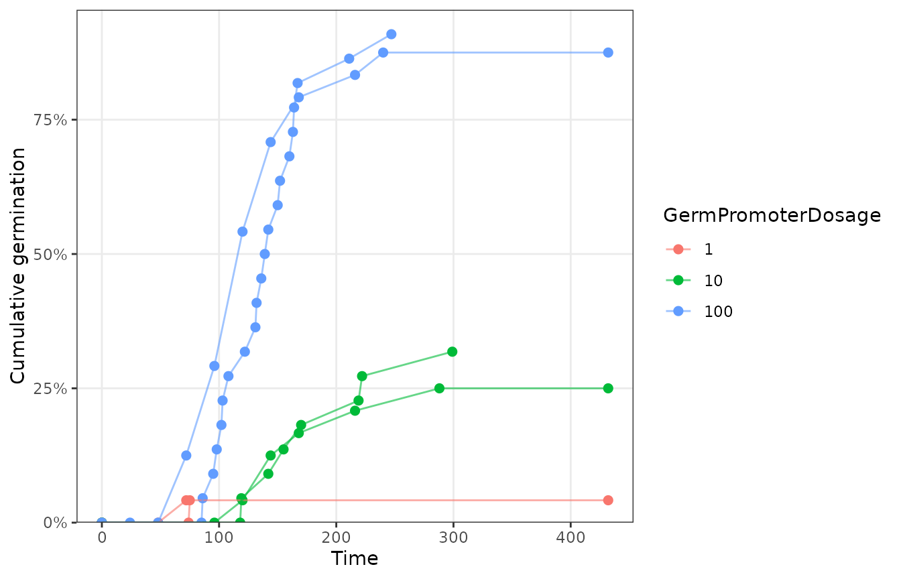
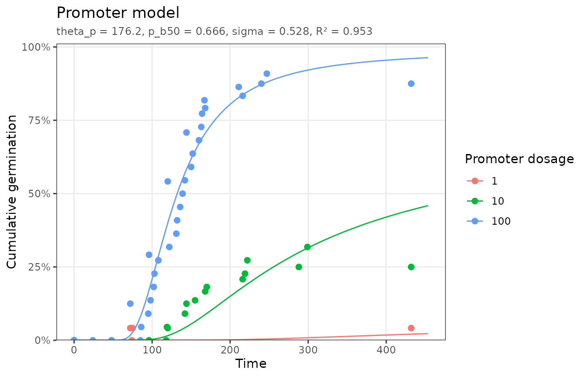
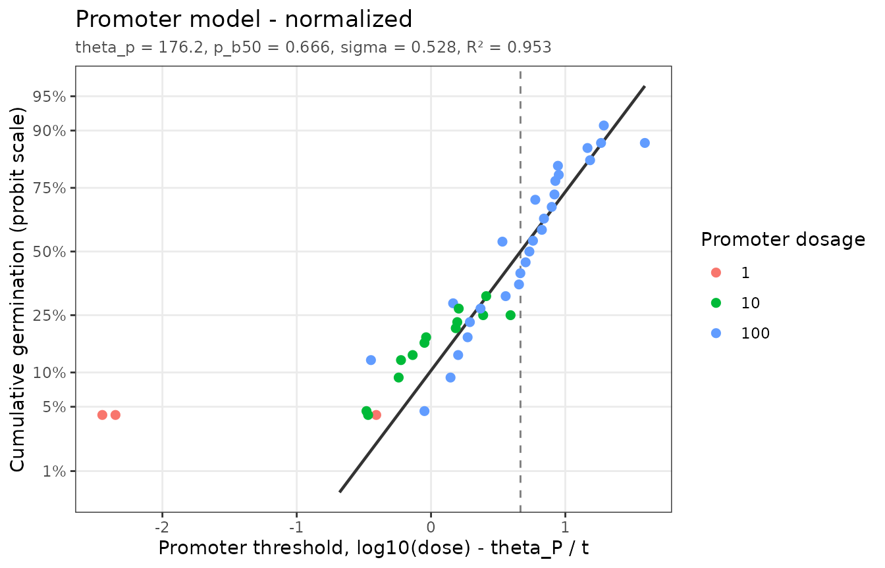
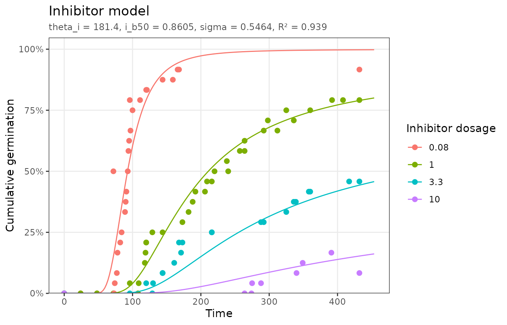
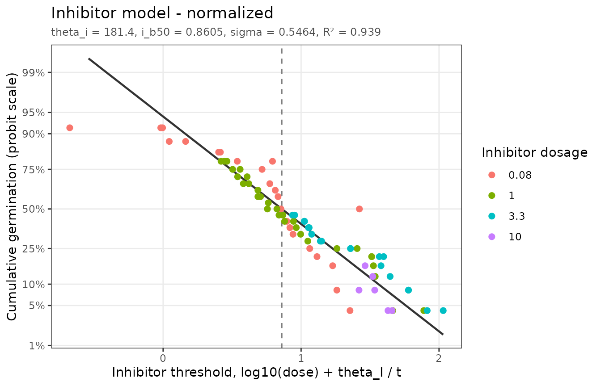

Chemical factors can speed up or slow down germination. Hormones are the classic example: gibberellin (GA) breaks dormancy and promotes germination, while abscisic acid (ABA) induces dormancy and inhibits it. The same threshold logic applies: each seed has a threshold dose, and the response rate depends on how far the applied dose is from it (Ni and Bradford, 1992, 1993).
Hormone dose responses are usually linear on a log scale, so both
models take dose_transform = "log10". The threshold
parameters (p_b50, i_b50, and
sigma) are then in log10 dose units.
Promoters
promoter_data has tomato seeds germinated with three GA
concentrations:
plot_germ_data(promoter_data, color = "GermPromoterDosage")
fit_p <- fit_promoter(promoter_data, dose_transform = "log10")
fit_p
#> <pbtm_fit> Promoter model
#>
#> theta_p p_b50 sigma
#> 176.2 0.666 0.528
#>
#> n = 57, pseudo-R2 = 0.9526, AIC = -302.1; dose transform = log10
autoplot(fit_p)
The median base GA dose is = 4.63 dose units.
The choice of scale matters. On the linear dose scale the fit is much worse, and the time constant runs into its upper bound, which pbtm reports as a warning:
fit_linear <- fit_promoter(promoter_data)
#> Warning: theta_p is at its bound.
#> ℹ The data may not constrain this parameter; consider widening `bounds` or
#> holding it `fixed`.
c(log10 = fit_p$stats$pseudo_r2, linear = fit_linear$stats$pseudo_r2)
#> log10 linear
#> 0.9525839 0.4269089The normalized plot uses the threshold axis :
autoplot(fit_p, type = "normalized")
#> Dropped 7 points that cannot be shown on the linear/probit axes (e.g. 0% or
#> 100% germination).
Inhibitors
Inhibitors act in the opposite direction: germination slows and declines as the dose approaches each seed’s inhibitory threshold, so the model uses the upper tail of the threshold distribution:
inhibitor_data has tomato seeds germinated with ABA:
fit_i <- fit_inhibitor(inhibitor_data, dose_transform = "log10")
fit_i
#> <pbtm_fit> Inhibitor model
#>
#> theta_i i_b50 sigma
#> 181.4 0.8605 0.5464
#>
#> n = 97, pseudo-R2 = 0.939, AIC = -501.5; dose transform = log10
autoplot(fit_i)
autoplot(fit_i, type = "normalized")
#> Dropped 11 points that cannot be shown on the linear/probit axes (e.g. 0% or
#> 100% germination).
Half of the seeds are prevented from germinating at ABA doses above 7.25 dose units.
Predicting dose responses
With the fitted model, final germination and germination timing can be predicted for untested doses. Pass the untransformed dose; the fit applies its own transform:
new <- expand.grid(GermInhibitorDosage = c(0.5, 2, 5), CumTime = c(48, 96, 192))
cbind(new, CumFraction = round(predict(fit_i, new), 3))
#> GermInhibitorDosage CumTime CumFraction
#> 1 0.5 48 0.000
#> 2 2.0 48 0.000
#> 3 5.0 48 0.000
#> 4 0.5 96 0.091
#> 5 2.0 96 0.007
#> 6 5.0 96 0.001
#> 7 0.5 192 0.654
#> 8 2.0 192 0.240
#> 9 5.0 192 0.076References
Ni, B.-R., Bradford, K.J. (1992) Quantitative models characterizing seed germination responses to abscisic acid and osmoticum. Plant Physiol. 98: 1057–1068. https://doi.org/10.1104/pp.98.3.1057
Ni, B.-R., Bradford, K.J. (1993) Germination and dormancy of abscisic acid- and gibberellin-deficient mutant tomato seeds: sensitivity of germination to abscisic acid, gibberellin, and water potential. Plant Physiol. 101: 607–617. https://doi.org/10.1104/pp.101.2.607